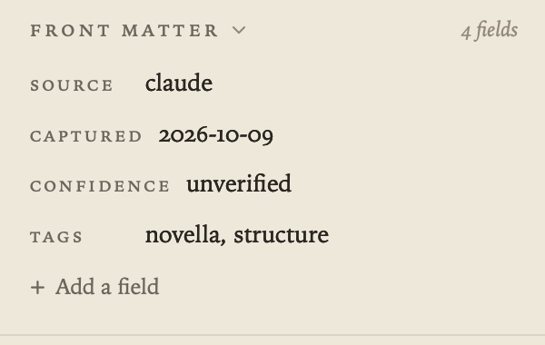
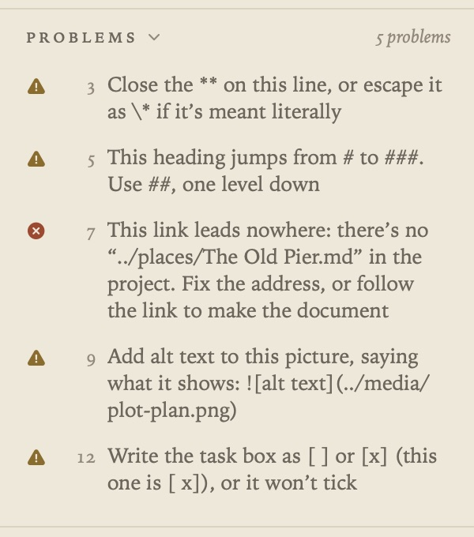

The Margin
The margin on the right shows how the document you’re on connects to the rest of your project. To show or hide it, choose View ▸ Show Margin (⌃⌥⌘S) or click the button at the right of the running head. Drag its edge to make it wider or narrower.

It has three tabs, Page, Tasks (⇧⌘T) and Ask (⇧⌘A). This guide covers Page, the tab for the document you’re on. For the other two, see Tasks and Due Dates and Ask Your Documents and AI.
Click a section’s heading to close or open it, and Grasmere remembers which ones you keep open. Mentioned in, Front Matter, Git History and Problems stay closed when they have nothing to show, and say None, or No problems. Click one to look. It opens by itself once there’s something in it.
New in 1.3: while a review is under way, a Review section comes first, with the reviewers’ comments and changes. See Review. In the research folder, the top of the margin tells you whether a document is a source, such as “A source · Book”, or a research note you could make into one. See Citations.
Linked from
Here you see every document that links to this one, each as a numbered sidenote showing the line with the link. Click a sidenote to open that document at the link.

When another document links to a particular passage, a small number beside the passage matches its sidenote. Point at the number and the passage is highlighted. Point at the sidenote to see which passage it quotes.
Links to
The documents this one links to, with the folder each is in.

Mentioned in
These are documents that name this one by its title but don’t link to it, with the words highlighted. Click one to open it at the mention, or click Link to turn the mention into an ordinary link. You can undo it.

If a document goes by other names, list them in its front matter and Grasmere looks for those too.
---
aliases: [Peggy, Mrs Hill]
---
It leaves out very short names, dates, and mentions inside headings, code or existing links.
Front Matter
New in 1.3.
To change the fields at the top of a document, between its --- lines, you can edit them here instead of on the page. Each field is a row, with its key and a value you can edit in place. Press Return or click elsewhere, and the line in the document changes to match. Escape puts the old value back.
To remove a field, click the × that appears beside its row. To add one, use Add a field at the bottom. Give it a key and a value and it becomes the last line of the block. If the document has no front matter, the section is closed and says None. Open it and add a field, and Grasmere makes the --- block at the top for you.
Each change is one step in Undo (⌘Z). If you type in the block on the page instead, the rows catch up a moment later.

A few things worth knowing:
- Values appear as written. Numbers, true and false, and dates are left as they are, and strings lose their quotes.
- A list, such as
tags: [a, b]or- itemlines under the key, is one row with commas between the items. When you edit it, it goes back in the form it had. - A nested value, such as
author:withname:androle:under it, is shown here but edited on the page. - Grasmere adds quotes only when YAML needs them. That means a value with a colon, one starting with
#or[, or, in a field that holds words, one that would otherwise read as a number or a date. - The other lines of the block are never touched.
- Front Matter is closed until you open it.
Git History
If your project folder is a git repository, Git History lists the commits that changed this document, following it through renames. Choose one to see that version and what’s changed since. Restore This Version brings it back as a single step you can undo, and Copy copies it. Git History is closed until you open it.

See Saving, Safety and Git for committing automatically.
Problems
New in 1.3.
If you’d like to catch Markdown mistakes as you go, turn on Settings ▸ General ▸ Check the Markdown as you write. The Page tab then ends with a Problems section, listing what’s wrong with this document a line at a time, in plain words that say what to do. Click a problem to put the cursor on its line.
A red cross is an error, where the Markdown won’t read the way you meant. An amber triangle is a warning. It reads, but not as well as it could. The header says how many there are, or No problems. Grasmere checks about half a second after you stop typing, and never changes anything for you.

The check is off until you turn it on. It looks only at the open document, and skips anything inside a code block, front matter or an HTML comment. Broken links are judged the same way as the dotted underlines on the page and the sidebar’s Broken Links, so all three agree.
These are the rules:
| Rule | Kind | What it catches |
|---|---|---|
fence.unclosed | Error | A code fence (``` or ~~~) that is never closed, so the rest of the document is code |
link.missing | Error | A link to a document, file, heading or passage that isn’t in the project |
image.missing | Error | A picture whose file isn’t in the project |
image.notImage | Error | A picture link () to a file that isn’t a picture |
frontMatter.unclosed | Error | Front matter that opens with --- and never closes |
frontMatter.malformed | Error | A front matter line that isn’t name: value, a - item or a comment, or has unclosed quotes |
table.cells | Error | A table row, or its separator line, with a different number of cells from the header |
reference.undefined | Error | A reference link ([text][label]) whose [label]: address line is missing |
footnote.undefined | Error | A footnote ([^1]) that is referred to but never written out |
footnote.unused | Error | A footnote ([^1]: …) that nothing refers to |
heading.jump | Warning | A heading more than one level below the one before (# then ###) |
heading.multiple | Warning | More than one # title |
heading.duplicate | Warning | Two headings with the same text, so links to them are ambiguous |
heading.noSpace | Warning | A # with no space after it, which isn’t a heading |
link.empty | Warning | A link with no address ([text]() or []()) |
image.noAlt | Warning | A picture with no alt text |
url.bare | Warning | A web address written out, not as a link |
emphasis.unbalanced | Warning | A *, ** or _ opened on a line and not closed on it |
task.malformed | Warning | A task box written wrong ([x ], [ X], [] or -[ ]), which won’t tick |
list.mixedMarkers | Warning | A list that changes bullet (-, * or +), which starts a new list |
whitespace.trailing | Warning | A single space, or a tab, at the end of a line (two spaces make a line break; one does nothing) |
fence.nested | Warning | A code fence opened inside another with the same marker, which is read as code |
citation.notSource | Warning | A citation ([Field 2026](…)) to a document that isn't a source (its front matter has no type), so it won't be formatted on export |
When the window is narrow
When the window is too narrow for the contents, the page and the margin side by side, the margin is the first to go. Show it again and it floats over the page. Focus mode hides it too.